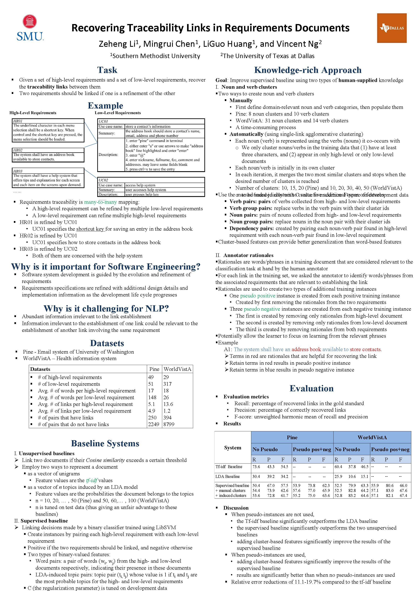

Recovering Traceability Links in Requirements Documents
Zeheng Li, Mingrui Chen, LiGuo Huang and Vincent Ng.
Proceedings of the Nineteenth Conference on Computational Natural Language Learning, pp. 237-246, 2015.
Click here for the
PDF version.
The talk slides are available here.
Abstract
Software system development is guided by the evolution of requirements.
In this paper, we address the task of requirements traceability,
which is concerned with providing bi-directional
traceability between various requirements, enabling users to
find the origin of each requirement and track every change made to it.
We propose a knowledge-rich approach to the task, where we extend
a supervised baseline system with (1) additional training instances
derived from human-provided annotator rationales;
and (2) additional features derived from a hand-built ontology.
Experiments demonstrate that
our approach yields a relative error reduction of 11.1--19.7%.
Dataset
The annotated datasets used in this paper are available from
this page.
BibTeX entry
@InProceedings{Li+etal:15a,
author = {Zeheng Li and Mingrui Chen and LiGuo Huang and Vincent Ng},
title = {Recovering Traceability Links in Requirements Documents},
booktitle = {Proceedings of the Nineteenth Conference on Computational Natural Language Learning},
pages = {237--246},
year = 2015}
